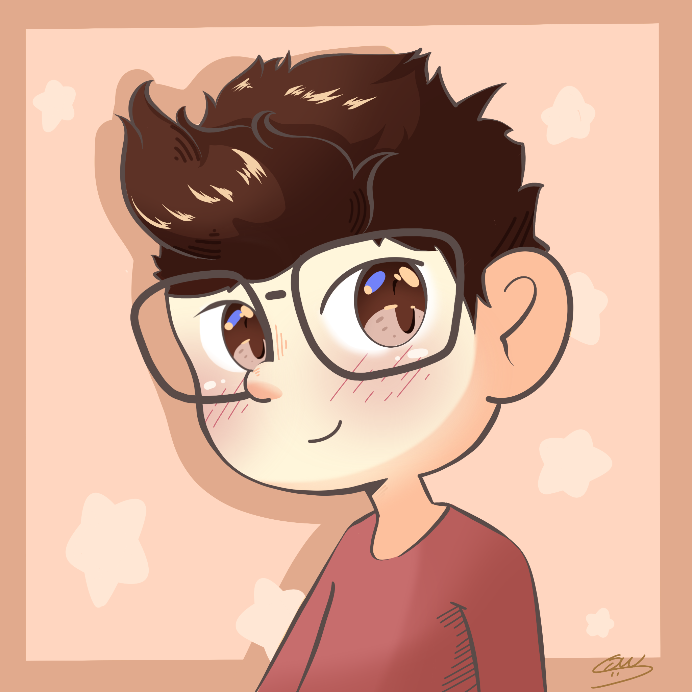

 I'm a 22-year-old boy named Samuel. I was born on 22.12.1999. I live in Bellinzona, a city in the canton of Ticino.
After compulsory school (primary school and compulsory school) I attended Liceo Diocesano, a private high school in Ticino, where I graduated from the federal exam (for more information about the federal exam click HERE). The address I chose was a mix between High school of science and art: I took the courses (and consequently took the exam) of higher mathematics and at the same time I also followed the artistic path. After high school I attended a year at an art academy, the Accademia Europea di Manga, where I learned the basics of comics and of traditional design. I left the academy to concentrate on computer science and in 2020 I started at the university of Italian Switzerland (USI).
I am a good drawer, good at both hand drawing and digital drawing. I mainly draw Kawaii characters (adorable, pretty), but if requested I can also make more accurate drawings. My drawing style is very Manga oriented, but I am also very good with oil paints, real life copy with pencils. I am not good at drawing realistic comics (Tex, Diabolik, ...). I'm in my second year of computer science at usi and as well as seeing a lot of theory, maths I've learned to program in various languages.
Racket: With a group of my classmates, during the first
semester, we made a game, entirely developed in
racket. It consists of capturing monsters in the world
and defeating the final boss.
Java: during the second semester i developed by myself, an
expression simplifier in java. it could simplify expressions with letters and numbers. the program can only
simplify expressions with these operations { +; -; *; /;
(; )}
javascript:in the third semester in a group of 5 people we developed a small website, which simulated a website for
sports enthusiasts, where you could register and create
activities in which you could join and if you joined the
same sport you could chat live with other members.
I am a lover of Nintendo video games, and especially tend to favour those games with artistic graphics and interesting music. I love new experiences thanks to video games
Besides video games I like to watch a lot of anime, I watch any genre but if I had to choose the series or film that impressed me the most and that I love for that is kaiba, a space animation by masaaki yuasa, with a deep and well articulated story.